Release walkthrough · 2026-10-29
Releasing Wee Hours, Headway and FitLoop to the App Store
All three apps are close. The code meets the App Store's rules for privacy manifests, purpose strings, account deletion, Sign in with Apple, export compliance and icons. Headway and FitLoop now have a complete App Store Connect listing (text, URLs, categories, age rating 4+, free price, availability, version 1.0.0). All three now have 6.9" iPhone screenshots to download, and Headway and FitLoop have watch screenshots too. What's left needs your accounts or your judgment: the App Privacy forms, your review contact, the Wee Hours price, a Sign in with Apple key, and cutting the 1.0.0 builds. Each app's section lists its steps in order, with every value ready to copy.
Verified
- App Store Connect: every write returned 200/201 and was read back. Headway and FitLoop show version 1.0.0, the text and URLs, age rating
FOUR_PLUS, a free USA price, and availability (Headway: US only; FitLoop: every territory but China mainland). - Tests:
npm run test:headway(62 + 9),typecheck:headwayandbuild:headwaypass. TheHeadwayKit(9) andFitLoopKit(8) Swift tests pass. - Builds: all three iPhone apps and the Headway and FitLoop watch apps build for the simulator. The Headway widget and watch bundles now contain
PrivacyInfo.xcprivacy. - Screenshots come from those builds on the iPhone 17 Pro Max simulator (1320 × 2868), against the local backend with demo data.
- Live sites: every app's
/,/privacy/,/support/and/terms/answer 200.
Not verified
- A physical iPhone wasn't used. The store needs 6.9" shots, which only the simulator can make here.
- The Headway Worker change (request logs off) deploys when you push. Wrangler parsed the config in a dry run; it isn't live yet.
- Review notes for all three are corrected here but not in App Store Connect: Apple refuses to update them until the review contact is filled in (§2, §3, §4).
- Agreements, tax and banking aren't visible to the API.
What I fixed, and what you need to do with it
These changes are in your working tree, not committed. Pushing deploys the Headway site and Worker. The app changes ship with the 1.0.0 builds.
| App | Gap | Fix | Where |
|---|---|---|---|
| Headway | The widget, watch app and watch widget use UserDefaults but had no privacy manifest. Apple flags missing required-reason declarations (ITMS-91053). | All three bundles now include the app's PrivacyInfo.xcprivacy (reason CA92.1). | projects/headway/apps/ios/project.yml |
| Headway | The privacy policy says location is "never stored or logged". But Workers request logs record every URL, and board URLs carry ?lat=&lon=. | Request (invocation) logs are off. The Worker's own logs never print URLs. | projects/headway/services/web/wrangler.jsonc |
| Headway | The privacy policy and Help page say "sign in with Google". The app also offers Sign in with Apple. | "Apple or Google"; the policy is dated October 29. | services/web/privacy/index.html, support/index.html |
| Headway | On the Trains board, "· 7 stops · Faster" wrapped onto two lines in the 6.9" screenshot. | The line stays on one row and drops "Faster" when it doesn't fit (the Express badge already says it). | apps/ios/App/Sources/BoardView.swift |
| FitLoop | The review notes said Health access is "off by default". The app actually asks for it once after sign-in, since the daily summary is on by default. | The notes now say what happens and that declining is fine. | projects/fitloop/review.env |
| FitLoop | Progress → Vitals showed "Wei…t (kg)". | The measure's full name. | apps/ios/App/Sources/PlanViews.swift |
| Headway, FitLoop | cut_release.sh refuses a version that What's New doesn't describe. The App Store version needs 1.0.0. | What's New 1.0.0 entries, including the two fixes above. | apps/ios/App/Sources/WhatsNewView.swift |
| Headway, FitLoop | The review notes didn't say where account deletion is. Reviewers check this under guideline 5.1.1(v). | A paragraph on Settings → Delete my … data. | review.env |
| Wee Hours | The review notes in App Store Connect say deletion removes "the sign-in". Since 5dd2e58f it keeps the shared HEJI login. | Corrected notes in §2, ready to paste. | App Store Connect |
| Headway, FitLoop | App Store Connect had only a name: no subtitle, description, keywords, URLs, category, age rating, copyright, price or availability. The version was "1.0", which doesn't match a 1.0.0 build. | All of them filled in by API, and the version renamed to 1.0.0. | App Store Connect |
- Look over the diff and commit it, or say "commit and push" in your notes.
cut_release.shrefuses a dirty or unpushedmain.git diff --stat git add -A projects/headway projects/fitloop reports/2026-10-29-app-store-release .claude/skills/heji-report git commit -m "Headway, FitLoop: App Store 1.0.0 readiness" git push
- After the push, check that Headway's Worker deployed (Cloudflare Workers Builds) and the policy shows the new date:
curl -s https://headway.hejitech.workers.dev/privacy/ | grep -o "Last updated [A-Za-z0-9 ,]*"
Wee Hours: your steps
App Store Connect app 6823293298, version page 1.0.0 (Prepare for Submission). The text, category, age rating (4+) and URLs were filled in on October 28 and still match the app. The build attached right now is an old 0.x upload (202610151828); replace it with the 1.0.0 build in step 7.
- Decide the price. The landing page, Terms, Support and the Lifetime screen all say "one-time purchase" and "Family Sharing", but no price is set. In Business, make sure the Paid Apps agreement is Active and tax and banking are filled in. Then Pricing and Availability: pick the price, keep all countries or choose some, and turn on Family Sharing (it can't be turned off later, which suits a one-time purchase). Also update the Billing row in
projects/weehours/docs/decisions.md; it still describes the old subscription. - Sign in with Apple key, so deletion can revoke the Apple token. Apple asks for revocation, and the privacy policy promises it. In the developer portal: Keys → +, tick Sign in with Apple, Configure → primary App ID
com.hejitech.weehours, then download the.p8(you can only download it once). Then:cd projects/weehours/services/web npx wrangler secret put APPLE_SIWA_KEY_ID --env production npx wrangler secret put APPLE_SIWA_PRIVATE_KEY --env production < AuthKey_XXXXXXXXXX.p8
- App Privacy: enter the table below and Publish.
- App Review Information (version page): fill in your first name, last name, phone and email, then replace the Notes with the corrected text below. "Sign-in required" stays off.
- Screenshots: drag the four PNGs into iPhone 6.9" Display.
- Watch screenshot (required because the app ships a watch app). The simulator can't sync the watch without signing, so take it on your watch. On the iPhone, open the Watch app → General → turn on Enable Screenshots. Open Wee Hours on the watch with the iPhone app running, press the side button and Digital Crown together, then AirDrop the image from Photos into Apple Watch on the version page.
- Build: cut 1.0.0 (§5). Once it's processed, choose it under Build on the version page in place of the old one.
- Add for Review → Submit. Release type is already "automatically after approval".
Values to paste
Wee Hours: Hands-Free Baby Log
Voice baby tracker & feed log
Log a feed, diaper or nap by voice, a tap, your watch or Even G2 glasses. Everyone in the household sees the same log, even at 3 a.m. Speech is understood on your iPhone.
Wee Hours is a baby log you can use with your hands full. Say "finished the bottle, about 90 ml" or "dirty diaper" and it's logged. Speech is transcribed and understood on your iPhone, works offline, and the audio never leaves your phone. LOG ANY WAY • Voice, from the app, the Speak widget, Control Center or Siri • One tap on the Now screen • Your watch: buttons, or tilt mode with just the watch arm • Even Realities G2 glasses and R1 ring ONE LOG FOR THE WHOLE HOUSEHOLD • Partners and caregivers see every entry within seconds • "Fed 2h40m ago · left side next" at a glance • Who's on duty, shift notes and gentle reminders • Twins and siblings, and the weeks before birth (kick counts) TRACK WHAT YOU NEED Feeds (bottle, breast, pumping, solids), diapers, sleep, growth, and optional care, health and activity entries like baths, medication, temperature and tummy time. Turn on only what you use. YOURS • Use it without an account, or sign in to sync • Photos on entries, CSV export • Connect your own AI assistant over MCP to ask about the log • No ads, no tracking Wee Hours records what happened. It doesn't give medical advice.
newborn,baby tracker,feeding,diaper,sleep,breastfeeding,bottle,nursing,pumping,twins,voice,growth
https://weehours.hejitech.workers.dev/support/
https://weehours.hejitech.workers.dev/
https://weehours.hejitech.workers.dev/privacy/
2026 HEJI TECHNOLOGY LLC
Health & Fitness
Lifestyle
No sign-in is needed: tap "Use without an account" on the first screen to try every logging feature (voice, tap, timeline, the watch app). Sign in with Apple creates an account for household sync. Voice: tap the microphone and say e.g. "bottle, 90 ml". Speech recognition and the decision model run on the device; no audio is uploaded from the iPhone. The Even G2 glasses and R1 ring screens in Settings are optional companion hardware; the app works fully without them. There are no in-app purchases. Account deletion: Settings → Delete account & data (signed in) deletes the user's Wee Hours account: the household's log and photos, memberships, invites and assistant access. With Sign in with Apple it first confirms with Apple so the token can be revoked. The same sign-in also opens our other apps, so their data isn't touched. Without an account the same place reads "Erase this phone's log".
App Privacy answers
App Store Connect → the app → App Privacy → Get Started. "Do you or your third-party partners collect data from this app?" → Yes. Tick exactly these types; for each one: purpose App Functionality only, linked as the table says, not used for tracking. Then Publish. The API can't write this form.
| Data type (as the form names it) | Why it's collected | Linked to the user | Tracking |
|---|---|---|---|
| Contact Info → Email Address | account (Apple / Google sign-in) | Yes | No |
| Contact Info → Name | caregiver display name, the baby's name | Yes | No |
| Identifiers → User ID | account, household membership | Yes | No |
| Health & Fitness → Health | feeds, sleep, growth, medication, temperature entries | Yes | No |
| User Content → Photos or Videos | photos attached to entries | Yes | No |
| User Content → Audio Data | glasses hold-to-speak captures, deleted once a phone processes them | Yes | No |
| User Content → Other User Content | log entries, notes, transcripts | Yes | No |
| Diagnostics → Other Diagnostic Data | shake-to-report problem reports, only when the user sends one | No | No |
Screenshots

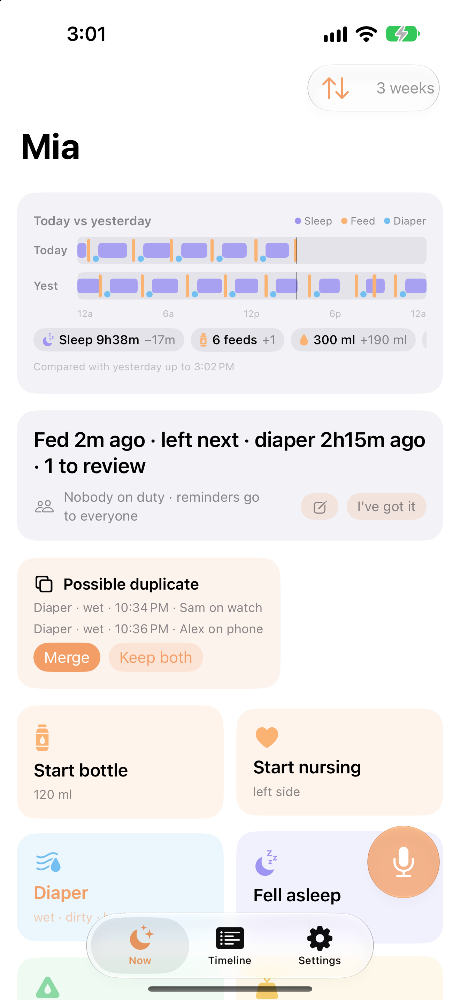

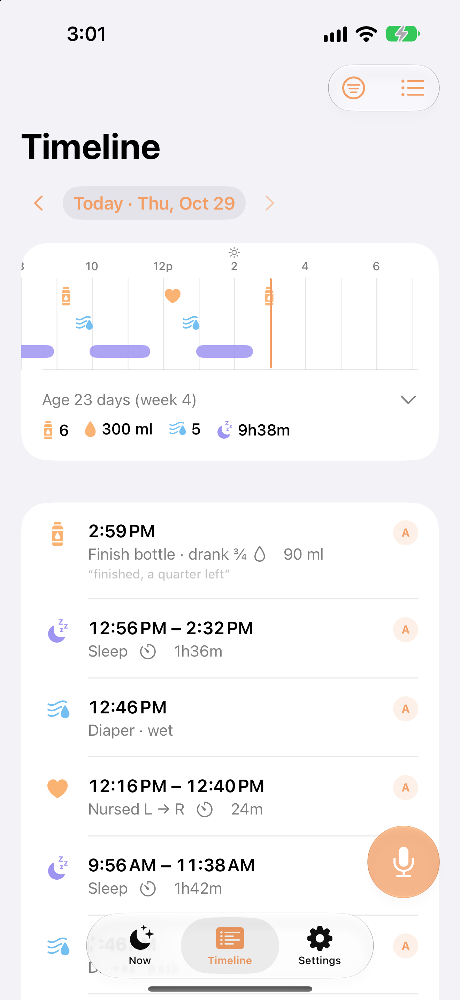

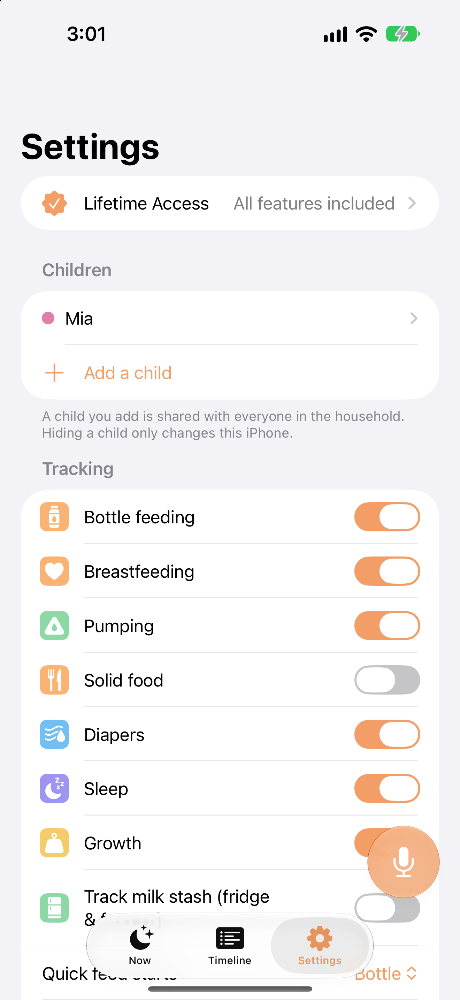

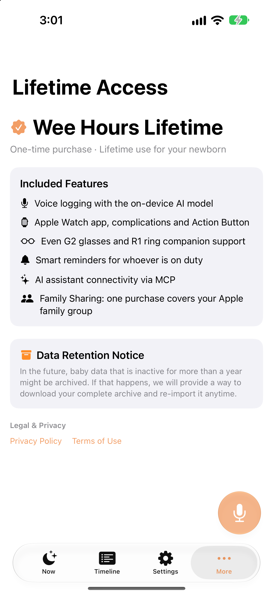
Headway: your steps
App Store Connect app 6827422048, version page 1.0.0. I filled in all of the text below, the category (Navigation / Travel), age rating 4+, copyright, a free price, and availability in the United States only (Caltrain is Bay Area only). The demo account is set. I set content rights to "uses third-party content" because the app shows 511.org and Caltrain timetable data, published as open data. Confirm under App Information that you have the rights to show it.
- App Privacy: enter the table below and Publish.
- App Review Information: fill in your name, phone and email. Then write the corrected notes, either by pasting them below or with:
scripts/review_account.sh headway --asc-only # rewrites the demo account + notes from review.env
- Screenshots: the two iPhone PNGs into iPhone 6.9" Display, and the watch PNG into Apple Watch (Ultra 3, 422 × 514). The board says TIMETABLE because the local backend has no live feed. If you'd rather show LIVE, shoot the Release build on a 6.9" simulator signed in to production.
- Build: cut 1.0.0 (§5) and choose the build on the version page. The build attached now (
202610270629) is a 0.2.x upload; replace it. - Add for Review → Submit.
Values to paste
Headway: Heads-Up Transit
Live Caltrain times & alerts
Live Caltrain departures, delay alerts and leave-by times on your iPhone, Lock Screen, watch and Even G2 glasses.
Headway puts your next Caltrain where you'll see it: on your iPhone, your Lock Screen, your watch and Even Realities G2 glasses. YOUR COMMUTE, ALREADY OPEN • Save a morning and an evening pair of stations. Headway opens on the right one for the time of day • Live departures with delays, express and local trains, and how many minutes you have before you need to leave • Leave-by times from the walk or drive you set, or estimated from where you are (optional) ALERTS THAT MATTER • Your train is running late past your threshold, or is cancelled • Caltrain service alerts for your stations • A leave-now reminder for your usual train • A heads-up a few minutes before your stop • When a later express gets you there sooner AT A GLANCE • Track the train you're on with a Live Activity on the Lock Screen and in the Dynamic Island • Pin the next trains to your Lock Screen • Next trains widget for the Home Screen and Lock Screen • A watch app and watch face complications that count down to when you need to leave • Share a live ETA link with family. It stops when you arrive HEADS-UP ON EVEN G2 Pair Even Realities G2 glasses with a 6-digit code and swipe through the next trains with the R1 ring. Glasses are optional. ASK YOUR ASSISTANT Connect Claude or another AI assistant over MCP and ask "when's my next train?" PRIVATE BY DESIGN No ads, no analytics, no tracking. Location is optional, used for one estimate at a time and never stored. Caltrain times come from Caltrain's published timetable and 511.org live data. Headway is not affiliated with Caltrain.
train,commute,bay area,schedule,departures,delay,san francisco,san jose,palo alto,widget,rail
https://headway.hejitech.workers.dev/support/
https://headway.hejitech.workers.dev/
https://headway.hejitech.workers.dev/privacy/
2026 HEJI TECHNOLOGY LLC
Navigation
Travel
Sign in: on the first screen tap "Sign in with email" (below Continue with Google) and use the demo account above. People create accounts with Sign in with Apple or Google; email sign-in is only for accounts we hand out, such as this one. Each sign-in with it starts from a demo commute (Mountain View to San Francisco in the morning, back in the evening). What to try: Trains shows live Caltrain departures with leave-by times; swipe a train to track it (Live Activity on the Lock Screen). The ... menu pins the next trains to the Lock Screen. Home Screen widget: Next trains. Commute sets the legs and alerts. Location (Settings) is optional and only estimates the walk or drive to the station; it's never stored. The Glasses tab pairs Even Realities G2 smart glasses with a 6-digit code; it needs the glasses and isn't required to use the app. The Apple Watch app shows the same board. Account deletion: Settings > Delete my Headway data deletes the account and everything Headway keeps about it (commute, devices, assistant access, history) and signs out. The same sign-in also opens our other apps, so their data isn't touched.
appreview+headway@hejitech.com
App Privacy answers
App Store Connect → the app → App Privacy → Get Started. "Do you or your third-party partners collect data from this app?" → Yes. Tick exactly these types; for each one: purpose App Functionality only, linked as the table says, not used for tracking. Then Publish. The API can't write this form. Location is not collected: it's sent with a board request, used for that answer and not stored (request logs are off since this change).
| Data type (as the form names it) | Why it's collected | Linked to the user | Tracking |
|---|---|---|---|
| Contact Info → Email Address | account (Apple / Google sign-in) | Yes | No |
| Identifiers → User ID | account | Yes | No |
| Other Data → Other Data Types | saved commute stations, alert settings, the train being tracked | Yes | No |
Screenshots

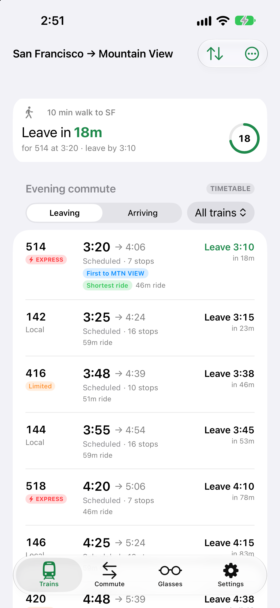

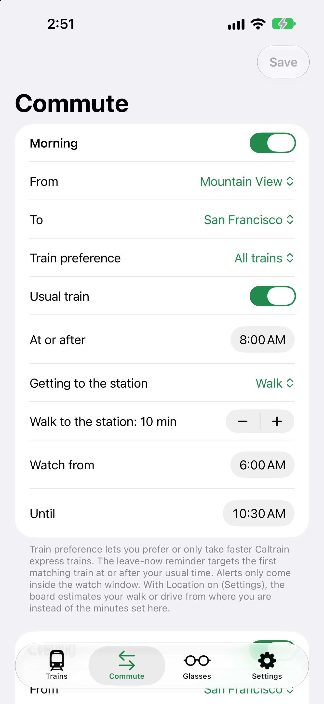

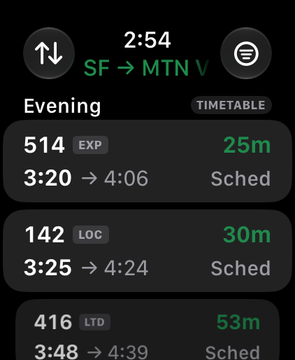
FitLoop: your steps
App Store Connect app 6827423160, version page 1.0.0. I filled in all of the text below, the category (Health & Fitness / Lifestyle), age rating 4+ ("health or wellness topics: yes", no medical information), copyright, a free price, and availability in every territory except China mainland (China needs an ICP filing). The demo account is set.
- App Privacy: enter the table below and Publish. Health data is linked to the user and never used for tracking or ads, which the privacy policy also says.
- App Review Information: fill in your name, phone and email, then write the corrected notes, by pasting them or with:
scripts/review_account.sh fitloop --asc-only
- Screenshots: the three iPhone PNGs into iPhone 6.9" Display, the watch PNG into Apple Watch.
- Build: cut 1.0.0 (§5) and choose it. The build attached now (
202610270625) is a 0.1.x upload. - Add for Review → Submit.
Values to paste
FitLoop: Workout Companion
Workouts your AI agent plans
Your AI agent writes your workouts and meals. FitLoop helps you follow them on iPhone, your watch and Even G2 glasses, and tells your agent how it went.
FitLoop turns the plan your AI agent writes into something you can follow, set by set and meal by meal. BRING YOUR OWN COACH FitLoop has no coach of its own. Connect Claude or another AI assistant over MCP: it interviews you about your goals, limits, equipment, schedule and diet, then writes your workouts and meals and publishes them to FitLoop. FOLLOW IT • Today: the day's workout and meals • A workout player with sets, targets, rest timers, how-to cues and demos • Heart rate from your watch during workouts • Plan: the whole week ahead • Progress: what you've done and how it's trending TELL YOUR AGENT, RIGHT THEN Too hard, knee hurt, still hungry: check in or leave a note on any workout or meal. Your agent reads it, replies and improves the next plan. You adjust a day (skip, swap, change a portion); your agent writes the plan. ON YOUR WRIST AND IN VIEW • A watch app with the current exercise and your heart rate, and a watch face complication for today's progress • Even Realities G2 glasses and R1 ring: the exercise, the set and a rest timer that starts itself, and meals that check off with a tap. Glasses are optional YOUR DATA, YOUR SWITCHES Live heart rate, a daily Apple Health summary, manual entries and progress photos are each a switch in Settings, and so is what your agent may see. Health data is never used for advertising. No ads, no tracking. FitLoop shows the plan your own agent writes. It isn't medical advice: talk to a doctor before starting a new exercise or diet program.
workout,fitness,meal plan,diet,ai coach,gym,strength,training,nutrition,mcp,personal trainer
https://fitloop.hejitech.workers.dev/support/
https://fitloop.hejitech.workers.dev/
https://fitloop.hejitech.workers.dev/privacy/
2026 HEJI TECHNOLOGY LLC
Health & Fitness
Lifestyle
Sign in: on the first screen tap "Sign in with email" (below Continue with Google) and use the demo account above. People create accounts with Sign in with Apple or Google; email sign-in is only for accounts we hand out, such as this one. FitLoop shows a fitness and nutrition plan that the user's own AI assistant writes (it connects over MCP from Settings > Agents). So you don't need an assistant, every sign-in with this account starts with a sample plan already published: today's workout and meals on Today, the full week on Plan. Try: open a workout and step through its sets, check off a meal, leave a note on Feedback, look at Progress. Apple Health is optional: after sign-in FitLoop asks once to read Health data for a daily summary (Settings > Daily Apple Health summary). Declining is fine and every screen still works. Health data is never used for ads and goes to an AI agent only if the user connects one and allows it in Settings > What your agent may see. The Apple Watch app shows the workout and heart rate while a workout is open on the iPhone. The Even Realities G2 glasses (Settings > Glasses) need the glasses and aren't required. FitLoop gives no medical advice. Account deletion: Settings > Delete my FitLoop data deletes the account and everything FitLoop keeps about it (plans, check-ins, notes, vitals, photos, devices, agent access) and signs out. The same sign-in also opens our other apps, so their data isn't touched.
appreview+fitloop@hejitech.com
App Privacy answers
App Store Connect → the app → App Privacy → Get Started. "Do you or your third-party partners collect data from this app?" → Yes. Tick exactly these types; for each one: purpose App Functionality only, linked as the table says, not used for tracking. Then Publish. The API can't write this form.
| Data type (as the form names it) | Why it's collected | Linked to the user | Tracking |
|---|---|---|---|
| Contact Info → Email Address | account (Apple / Google sign-in) | Yes | No |
| Identifiers → User ID | account | Yes | No |
| Health & Fitness → Health | daily Apple Health summary and manual entries (weight, resting HR, HRV, sleep), only if switched on | Yes | No |
| Health & Fitness → Fitness | workouts, check-ins, steps, active energy, workout heart rate | Yes | No |
| User Content → Photos or Videos | progress photos, off by default | Yes | No |
| User Content → Other User Content | notes for the agent, the "About you" profile, plans | Yes | No |
Screenshots

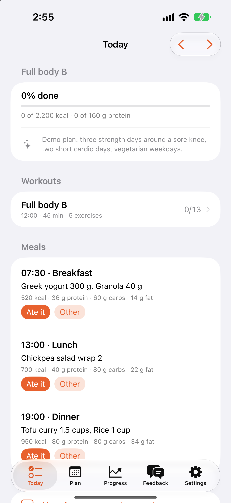

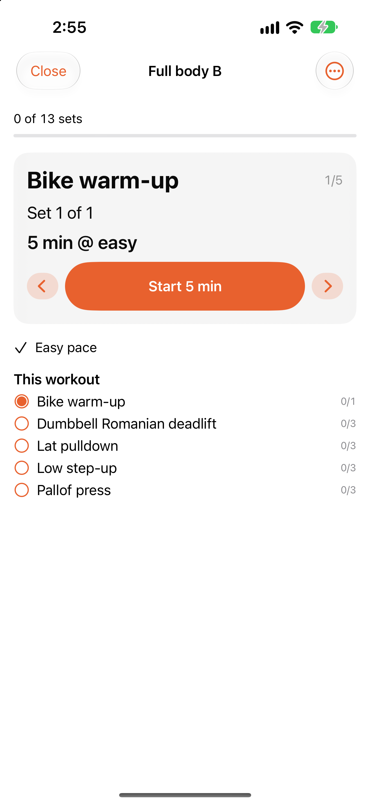

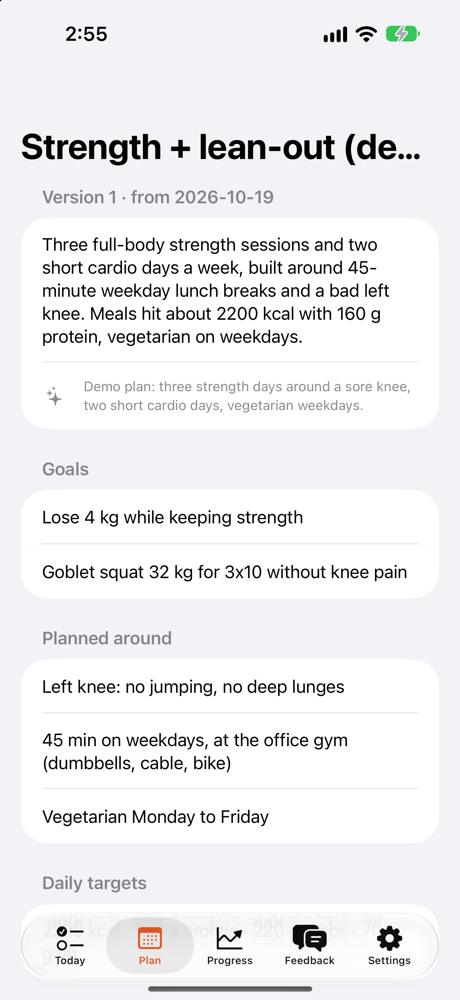

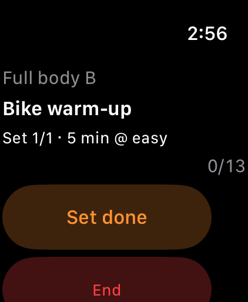
Cutting the 1.0.0 builds
What's New already describes 1.0.0 in all three apps, so release_check lets the version through. Run these from the repo root on a clean, pushed, CI-green main. Each one publishes <app>-v1.0.0, which runs the TestFlight workflow (and, for Headway and FitLoop, uploads the glasses plugin to Even Hub as Beta). Check each first with --dry-run.
scripts/cut_release.sh headway 1.0.0 --dry-run scripts/cut_release.sh headway 1.0.0 --watch scripts/cut_release.sh fitloop 1.0.0 --dry-run scripts/cut_release.sh fitloop 1.0.0 --watch scripts/cut_release.sh weehours 1.0.0 --dry-run scripts/cut_release.sh weehours 1.0.0 --watch
A green TestFlight run isn't proof the build is in App Store Connect (root CLAUDE.md). The Wee Hours script waits for Apple's verdict. For Headway and FitLoop, check that the build shows in TestFlight as "Ready to Submit" before you choose it. Export compliance needs no answer: every target sets ITSAppUsesNonExemptEncryption = NO, and the last uploads show usesNonExemptEncryption: false.
What the scan checked
| Requirement | Wee Hours | Headway | FitLoop |
|---|---|---|---|
| Privacy manifest in every bundle that needs one | Yes (shared file in all four targets) | Fixed (widget and watch targets) | Yes (app; the watch targets use no required-reason APIs) |
| Purpose strings for each permission | Microphone, camera, saving photos | Location (when in use) | Health read and write, photo library |
| Export compliance key | Set to NO in every target | ||
| Sign in with Apple next to Google (4.8) | Yes | ||
| Account deletion in the app (5.1.1(v)) | Settings → Delete account & data | Settings → Delete my Headway data | Settings → Delete my FitLoop data |
| Revoking the Apple token on deletion | Code ready; needs your key (§2 step 2) | Not built (§7) | Not built (§7) |
| Demo access for App Review | No sign-in needed (local mode) | Demo account, live | Demo account, live |
| Privacy policy, support and terms pages | 200 on the live site; linked in the app's Settings | ||
| Icon: 1024 px, no alpha | Yes (iPhone and watch) | ||
| Works without the glasses (2.1, 4.2) | Yes; the notes say the glasses are optional | ||
| Medical claims | None ("doesn't give medical advice") | n/a | None ("isn't medical advice") |
| Data shared with third-party AI (5.1.2(i)) | Only through the user's own MCP connection, after OAuth consent | Same | Same; the consent screen lists the health data, and Settings has a switch for each kind |
| "Apple" in App Intent strings (ITMS-90626) | None | ||
Risks and open questions
| Risk | Why | What to do |
|---|---|---|
| A reviewer says deletion doesn't delete the account (5.1.1(v)) | By your rule, deleting removes only the app's own data and keeps the shared HEJI login. Apple usually accepts this when the app's account and data are gone and the user is signed out. | The review notes now explain it. If Apple rejects, the reply is that sign-in is shared across apps by the same developer, so each app deletes its own account. Changing the behaviour is your call. |
| No Apple token revocation in Headway and FitLoop | Apple asks apps using Sign in with Apple to revoke tokens when an account is deleted. Wee Hours has the code (src/worker/account.ts + AppleReauthorization.swift); Headway and FitLoop don't. | Reviewers rarely test it, so it isn't a blocker. Write "port Apple revocation" in your notes and I'll copy Wee Hours' code into each project (no cross-project imports). Each app then needs its own key, as in Wee Hours step 2. |
| "Caltrain" in Headway's subtitle (5.2) | It names the agency the app serves (Headway isn't affiliated, which the description says). Transit apps commonly do this. | If Apple objects, change the subtitle to "Live train times & alerts". |
| FitLoop shares vitals with the agent by default | "What your agent may see → Vitals" defaults to on. Nothing is shared until the user connects an agent and approves a consent screen that lists the data, which meets 5.1.2(i)'s explicit permission. | For a stricter stance, default it to off (packages/core/src/settings.ts). Say so in your notes. |
| Wee Hours watch screenshot | It can only come from your real watch (§2 step 6). | Without one, App Store Connect won't let you submit while a watch app ships. |
Checklist
- Commit and push this pass's changesHeadway Worker redeployed; privacy page dated October 29
- Wee Hours: Paid Apps agreement, price, Family Sharing on
- Wee Hours: Sign in with Apple key into the Worker
- Wee Hours: App Privacy published
- Wee Hours: review contact and corrected notes
- Wee Hours: 4 iPhone screenshots + 1 watch screenshot
- Headway: App Privacy published
- Headway: review contact, then notes
- Headway: 2 iPhone + 1 watch screenshots
- Headway: content rights confirmed
- FitLoop: App Privacy published
- FitLoop: review contact, then notes
- FitLoop: 3 iPhone + 1 watch screenshots
- Cut 1.0.0 for each app and choose the buildBuild shows "Ready to Submit" in TestFlight
- Submit all three for review
Your notes
Decisions (the Wee Hours price, porting Apple revocation, the agent default), corrections, questions. Saved in this browser. Copy summary puts the whole report, your ticks and these notes on the clipboard for any agent.
Report: reports/2026-10-29-app-store-release · serve with script/serve.sh